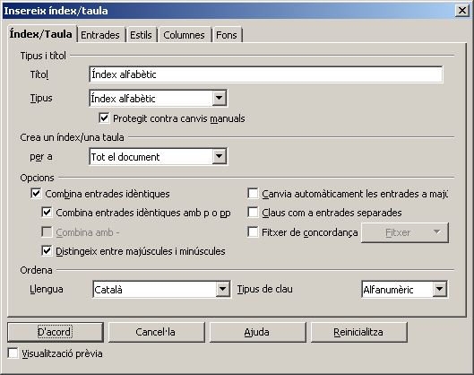
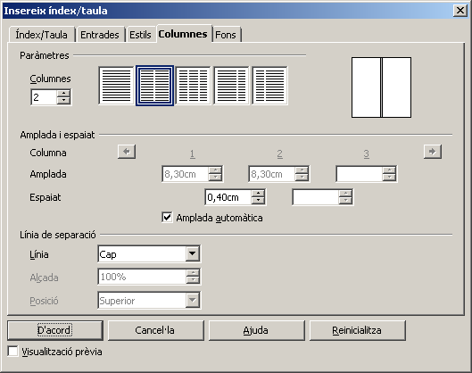
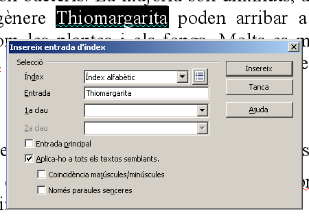
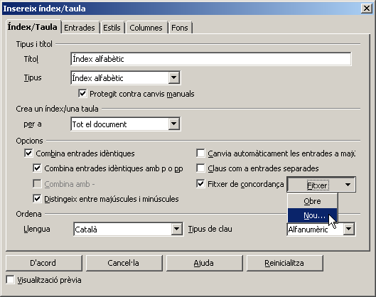
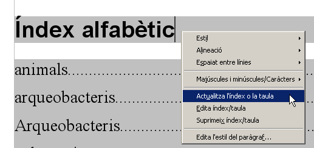

Índex alfabètic
El LibreOffice Writer permet crear amb una certa facilitat un Índex alfabètic, que és una relació de paraules ordenades alfabèticament, amb especificació de la pàgina on apareixen en el nostre document.
Crear un índex alfabètic
Per tal de crear l'índex alfabètic, caldrà que actueu de forma idèntica a com heu actuat per tal de crear l'índex del document o d'il·lustracions.
-
Continueu amb el document anterior (essersunicellulars.odt).
-
Aneu a la fi del document i feu Insereix | Índexs i taules | índexs i taules…

-
Al quadre de diàleg que us apareix, trieu Tipus | Índex alfabètic.
-
Podeu determinar la llengua que voleu que sigui la base de la ordenació (per defecte, és la del sistema).
-
Podeu determinar que l'índex sigui de dues columnes de text amb una separació de 4 mil·límetres.

-
Quan cliqueu el botó D'acord, ja haureu creat l'índex.
Afegir paraules a l'índex alfabètic
Una vegada creat l'índex ja podeu anar afegint-li paraules. Hi ha tres maneres de realitzar aquest procés:
-
Seleccionar la paraula que voleu que surti a l'índex i fer Insereix | Índex i taules | Entrada.
-
Fer visible la barra d'eines Insereix i, llavors, seleccionar la paraula que voleu que surti a l'índex i clicar la icona Entrada ().
-
Entrar a mà un llistat amb les paraules que voleu fer aparèixer a l'índex alfabètic.
Sense barra d'eines
-
Feu un doble clic damunt la paraula Thiomargarita que trobareu al segon paràgraf del document.
-
Crideu Insereix | Índex i taules | Entrada.
-
Marqueu Aplica-ho a tots els textos semblants.
-
Cliqueu el botó D'acord.

Amb barra d'eines
-
Feu aparèixer la barra d'eines Insereix.
-
Feu un doble clic damunt la paraula moneres que trobareu al cinquè paràgraf (a l'apartat Nomenclatura).
-
Cliqueu la icona Entrada.
-
Actueu com en l'apartat anterior.
A mà
-
Situeu-vos damunt l'Índex ja creat.
-
Cliqueu el botó dret del ratolí (feu aparèixer el menú de context) i seleccioneu l'opció Edita | Índex/Taula.
-
Marqueu la casella Fitxer de concordança.

-
Desplegueu el menú adjacent i seleccioneu Nou… i doneu-li el nom que considereu adequat.
-
Aneu afegint les paraules que voleu que apareguin relacionades amb l'índex alfabètic.

-
Quan acabeu, cliqueu els botons D'acord.
De la manera que trieu, afegiu a l'índex les paraules següents: Thiomargarita, protistes, fongs, plantes, animals, eubacteris, arqueobacteris, eucariotes.
Actualitzar un índex alfabètic
Si voleu actualitzar l'Índex alfabètic, només cal que us poseu dins i, tot clicant el botó dret del ratolí per tal de fer aparèixer el menú de context, seleccioneu l'opció Actualitza l'índex o la taula.

Deseu el document amb el nom essersunicellulars_v2.odt.

|
|

|
|